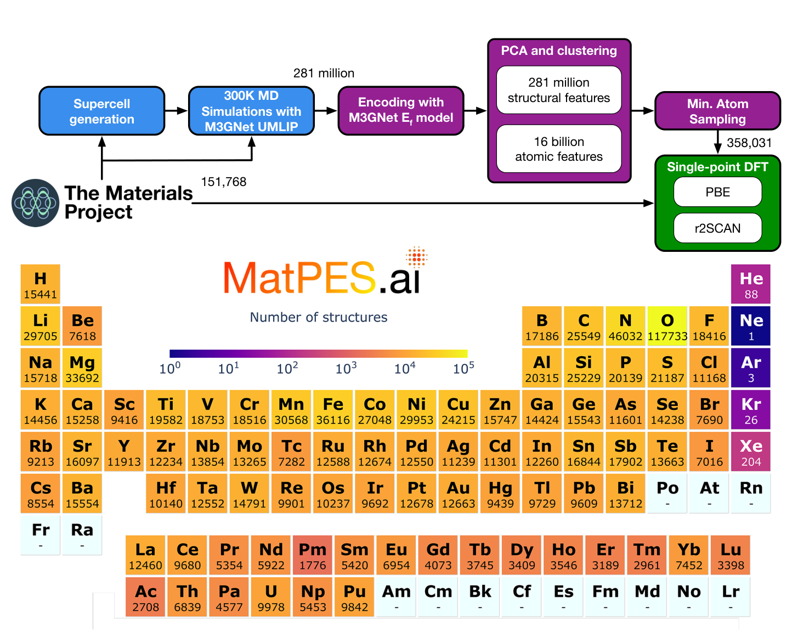
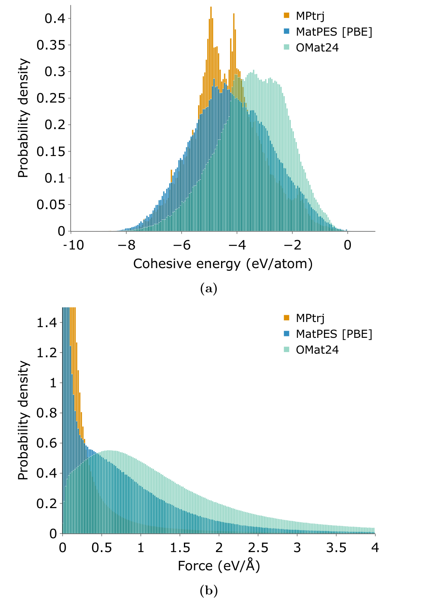
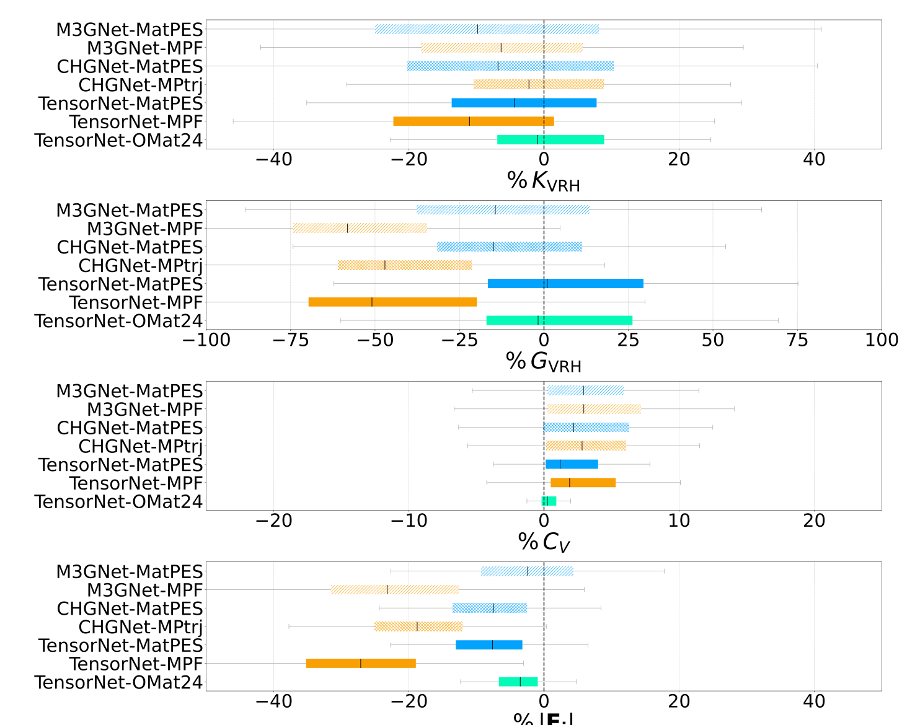
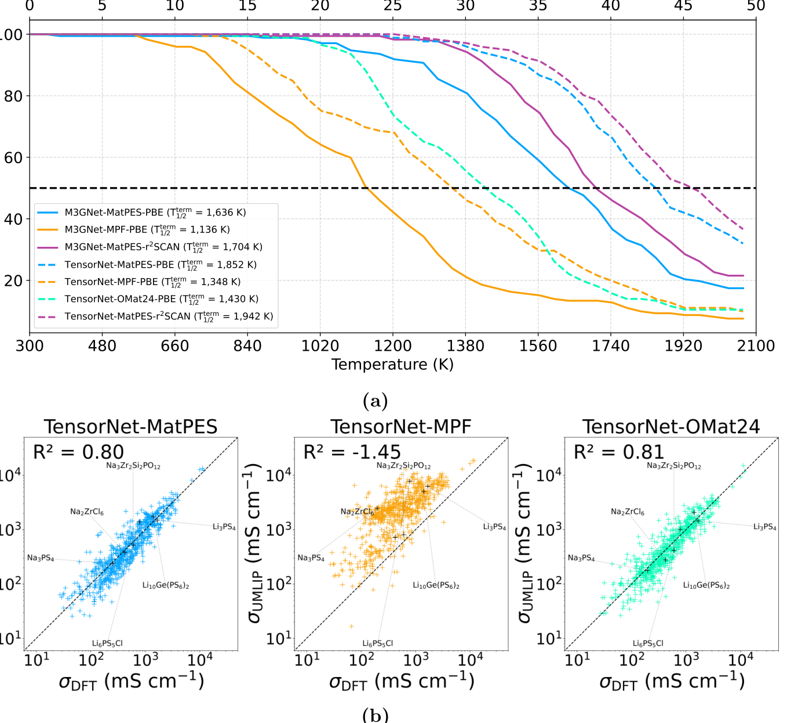

Why this paper matters
Foundation machine learning interatomic potentials are usually discussed as models. That framing is not wrong, but it hides the most important part of the problem. A potential energy surface is not defined by an architecture. It is defined by the reference calculations, the structures chosen for those calculations, and the parts of configuration space that the training set makes visible.
Kaplan and coauthors make this point in a very concrete way with MatPES. They introduce a foundational potential energy surface dataset for materials and show that models trained on it can compete with or outperform models trained on much larger datasets. The paper is not just saying that smaller can beat bigger. The more useful message is that the way we sample a potential energy surface matters as much as the number of structures we count ([1]).
That is a big deal for materials discovery. We often use machine learning potentials as fast replacements for DFT relaxations or molecular dynamics. But the moment a model is used for dynamics, defects, phonons, surfaces, diffusion, or high pressure pathways, it is no longer enough to know that it can reproduce low energy structures. The model has to know the shape of the surface around and away from those minima.
Relaxed structures are not a surface
The paper starts from a problem that should be obvious but is easy to ignore. The most common training data for universal MLIPs comes from DFT relaxation trajectories in the Materials Project. Those trajectories are useful, but they were not generated to map potential energy surfaces. They mostly contain structures close to equilibrium. They also mix PBE and PBE+U calculations, and those choices can create inconsistencies in energies, forces, and stresses ([1]).
A relaxation trajectory is like watching a structure roll downhill. It tells you something about the valley near the final minimum. It tells you much less about the ridges, saddle regions, distorted local environments, and thermally sampled configurations that appear during real atomistic simulation. A dataset built mostly from relaxations can therefore look large while still being narrow in the places that matter for dynamics.
This is why I like the name MatPES. The target is not just formation energy. It is the potential energy surface. Energies, forces, and stresses all have to be consistent because together they define the local geometry of that surface. If the energy is right but the forces are wrong, the surface is wrong. If the forces are right near a minimum but wrong during a thermally distorted trajectory, the dynamics are wrong.
The main idea is sampling
MatPES begins with Materials Project ground state structures, but it does not stop there. The authors generate supercells and run 300 K constant pressure molecular dynamics using a pretrained M3GNet model. This produces about 281 million molecular dynamics snapshots and more than 16 billion atomic environments. They then use a two stage DIRECT sampling procedure to choose representative structures from this enormous configuration space before running expensive single point DFT ([1]).

The first practical lesson is that the expensive part is not only DFT. The expensive part is choosing which DFT calculations are worth doing. MatPES uses a learned model to explore cheaply, then uses DFT to label a carefully selected subset. That is exactly the kind of tiered strategy that keeps showing up in computational materials discovery. Use the fast model to search broadly. Use the expensive calculation to anchor the result.
The final version described in the paper contains 434,712 PBE calculations and 387,897 r2SCAN calculations. The broader initial pool includes 504,811 equilibrium and non equilibrium structures submitted to stringent single point DFT workflows. Those numbers are large, but they are not the main achievement. The main achievement is that the data are deliberately sampled from a much larger space rather than inherited from whatever structures happened to pass through relaxation workflows ([1]).
Quantity is not the same as coverage
Figure 2 is one of the clearest arguments in the paper. MatPES, MPtrj, and OMat24 have different distributions of cohesive energies and force magnitudes. MPtrj is narrow in force because it is dominated by relaxation data near minima. OMat24 samples many higher force configurations, but it undersamples near equilibrium environments. MatPES sits in the middle. It covers near equilibrium structures and meaningful off equilibrium distortions at the same time ([1]).

This is where the paper is strongest. It refuses the lazy version of the data scaling argument. More structures are not automatically better if they repeat the same local environments or emphasize the wrong part of the surface. A million structures can be a small dataset if they all live in the same part of chemical and geometric space. A smaller dataset can be a better dataset if it covers the modes that determine the target applications.
That lesson is directly relevant to high pressure and low dimensional materials. A compressed hydride, a defected monolayer, or an interface with a reactive adsorbate is not just another equilibrium crystal. The local environment can sit far away from the common structures in a database. If those environments are not sampled, the model has no reason to be reliable there. Coverage has to be defined by the physics of the intended use, not by the size of the download.
The reference level is part of the model
A second important contribution is the r2SCAN portion of the dataset. Most universal MLIP work has relied on PBE because it is cheap and widely used. PBE is a good workhorse, but it can struggle with weaker ionic and van der Waals bonding. The paper argues that r2SCAN offers a better description of local bonding and intermediate van der Waals interactions without adding an explicit dispersion correction ([1]).
That matters because a foundation potential is not reference free. A PBE potential learns PBE chemistry. An r2SCAN potential learns r2SCAN chemistry. The architecture does not remove the identity of the functional. It only gives a fast approximation to that functional over a chosen part of configuration space.
This is a useful reminder for interpreting MLIP results. If a model predicts a phase transition, a diffusion barrier, or a phonon instability, the first question is not only whether the neural network is accurate. It is also which reference surface the model is trying to reproduce. MatPES makes this provenance cleaner by producing consistent PBE and r2SCAN labels under well specified workflows.
Benchmarks should look like use cases
The paper also improves the way the models are judged. The authors do not stop at random test error. They evaluate equilibrium relaxations, formation energies, bulk and shear moduli, heat capacity, off equilibrium forces, molecular dynamics stability, and ionic conductivity. That benchmark set is much closer to how people actually use interatomic potentials ([1]).
The equilibrium results are mostly favorable. MatPES trained UMLIPs generally relax structures closer to DFT reference geometries than MPRelax models of the same architecture. Formation energy accuracy is more mixed, which is not surprising. Formation energy can reward memorizing stable crystalline chemistry, while PES quality also depends on forces and distorted environments ([1]).
The near equilibrium benchmarks are more revealing. MatPES models improve shear moduli and off equilibrium force predictions, while bulk modulus and heat capacity are more comparable across datasets. That pattern makes sense. Bulk compression near a minimum is well represented in relaxation data. Shear and distorted forces probe directions where a narrow relaxation dataset has less information ([1]).

Dynamics is where the surface gets tested
The molecular dynamics benchmark is the part I would pay the most attention to. A model can look fine in static energy tests and still fail when atoms move. The authors use a set of 172 battery materials and heat them from 300 K to 2,100 K. Simulations terminate if the volume explodes or atoms are lost. This is a blunt test, but it is a useful one because unstable dynamics expose bad forces quickly ([1]).
The MatPES models are much more stable than comparable MPRelax and OMat24 models. By 1500 K, fewer than 10 percent of the TensorNet MatPES PBE and r2SCAN simulations have terminated, while about 55 percent of TensorNet OMat24 PBE and about 65 percent of TensorNet MPF PBE simulations have terminated. The r2SCAN MatPES model is especially stable in this test ([1]).

The ionic conductivity result is also interesting. TensorNet trained on MatPES reaches an R2 value of 0.80 against AIMD conductivities, while TensorNet trained on OMat24 reaches 0.81. That looks like a tie until you notice the scale. The paper states that OMat24 is about 250 times larger for this comparison. TensorNet trained on MPF performs much worse, with negative R2 in the same metric ([1]).
This is the paper in one result. Carefully sampled data can compete with brute force scale. That does not mean brute force is useless. It means scale without the right coverage is inefficient. For public science, that distinction matters because most academic groups cannot train on 100 million DFT structures or run enormous models every time they need a practical potential.
Open data changes who can participate
The open science part of the paper is not cosmetic. The authors point out that TensorNet training on the MatPES PBE dataset takes about 15 minutes per epoch on one Nvidia RTX A6000 GPU, while the same model on OMat24 takes about 20 hours per epoch on sixteen Nvidia A100 GPUs. Those are very different worlds of access ([1]).
The paper also makes the workflow more reusable. The DFT settings are implemented as MatPESStaticSet in pymatgen, and the static workflow can be launched through atomate2. That means a group can generate new labels for a specialized domain without inventing a different reference protocol. For foundation potentials, that kind of consistency is not bookkeeping. It is how fine tuning data stays on the same surface ([1]).
This is especially important for academic materials science. A closed 100 million structure dataset can be impressive and still be difficult to build on. A smaller open dataset with a clear sampling strategy, consistent labels, and reusable workflows can become a community object.
What this does not solve
I would not read MatPES as a finished universal dataset. The authors do not claim that either. The dataset is built from 300 K molecular dynamics around Materials Project derived crystals. That is a very broad starting point, but it is still a starting point. It does not automatically cover high temperature liquids, pressure induced phases, charged defects, surfaces, grain boundaries, catalytic transition states, amorphous structures, or the hydrogen networks that appear in high pressure superhydrides ([1]).
This limitation is not a weakness of the paper. It is the next design problem. A foundation dataset has to be expandable in a controlled way. MatPES gives a sampling and labeling framework that can be extended to the missing regimes. That is more valuable than pretending the first release already contains every local environment a materials scientist will care about.
I would also be careful about treating a benchmark win as a trust certificate. A model that is stable for battery materials may still fail for a high pressure hydride, a defected transition metal dichalcogenide, or a surface reaction. The right conclusion is not that MatPES models can be used everywhere without thought. The right conclusion is that the route to trust is becoming more measurable.
Why it connects to my work
This paper fits naturally with the way I think about computational materials discovery. In my thesis work, machine learning was useful when it was tied to a physically meaningful workflow. For metal superhydrides, the model was not asked to discover everything directly. It helped screen metal templates before expensive hydrogen insertion and DFT validation. The point was to use data to focus first principles calculations, not to replace physical reasoning.
MatPES does the same thing at the level of the potential energy surface. A cheap learned model is used to explore a huge configuration space. Sampling compresses that space into a tractable set of high value structures. DFT then defines a consistent reference surface. The result is a dataset that is not just a collection of labels, but a deliberate map of where the model should know chemistry.
There is also a connection to interpretability. In my own work, descriptors like ELF matter because they turn electronic structure into something chemically readable. MatPES is not an interpretability paper in that sense, but it is still about making the object of learning clearer. It asks what part of the potential energy surface has been observed, what reference functional defines that surface, and which benchmarks reveal whether the learned surface is useful.
What I take from it
The strongest claim of the paper is not that MatPES is the final answer. The strongest claim is that foundation MLIPs need foundation datasets built for potential energy surfaces, not accidental mixtures of relaxation data. That difference changes how the whole field should think about progress.
Bigger models and bigger datasets will continue to matter. But the paper shows that dataset design can move the needle more efficiently than raw scale. Choosing representative structures, keeping the reference level consistent, including off equilibrium environments, and evaluating models on properties that look like real use cases are not secondary details. They are the scientific content of the model.
I think the next step is to make this kind of sampling more application aware. A foundation dataset for ordinary inorganic crystals is one thing. A foundation dataset that also knows high pressure chemistry, surfaces, defects, molecular hydrides, low dimensional materials, and transition states is a different object. MatPES gives a credible path toward that object. It makes the dataset feel less like training fuel and more like an experimental design for learning the potential energy surface.
References
- Kaplan A D, Liu R, Qi J, Ko T W, Deng B, Riebesell J, Ceder G, Persson K A, and Ong S P. A Foundational Potential Energy Surface Dataset for Materials. arXiv 2503.04070. 2025. arXiv pdf.
- Chen C and Ong S P. A universal graph neural network for accurate and efficient deep learning of interatomic potentials. Nature Computational Science. 2022.
- Deng B and coauthors. CHGNet as a pretrained universal neural network potential for charge informed atomistic modelling. Nature Machine Intelligence. 2023.
- Barroso-Luque L and coauthors. Open Materials 2024 OMat24 inorganic materials dataset and models. arXiv. 2024.
The figures in this post are cropped from reference [1] for commentary and discussion.